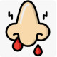

Epistaxis
Rx
1.Oint Tetracycline 3% N=1 q8h 10days
+ Or Oint Vit A-D N=1 daily
2.Spray Oxymetazoline 0.05% N=1 PRN
or
Nasal Drop Phenylephrine 0.5% patient without HTN
Nasal Drop Naphazoline 0.05% patient with HTN
نکته1: از مورد اول برای پیشگیری از خونریزی مکرر (ناشی از خشکی مخاط بینی) و از مورد دوم درهنگام خونریزی استفاده می شود
1️⃣ محرک های شیمیایی
2️⃣ نارسایی کبدی
3️⃣ لوکمی
4️⃣ ترومبوسایتوپنی
5️⃣ هموفیلی
Von Willebrand Disease 6️⃣
DIC 7️⃣
Heparin toxicity 8️⃣
Salicylate Toxicity 9️⃣
🔟 Warfarin toxicity
Dipyridamole toxicity 1️⃣1️⃣
Cocaine Toxicity 1️⃣2️⃣
1️⃣3️⃣ تروما
1️⃣4️⃣ تومور
1️⃣5️⃣ جسم خارجی بینی
Osler-Weber-Rendu Syndrome 1️⃣6️⃣
Sinusitis (Rhinosinusitis) 1️⃣7️⃣
Endometriosis 1️⃣8️⃣